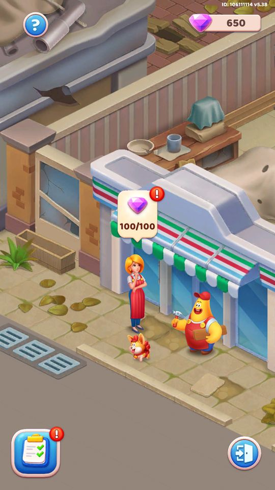
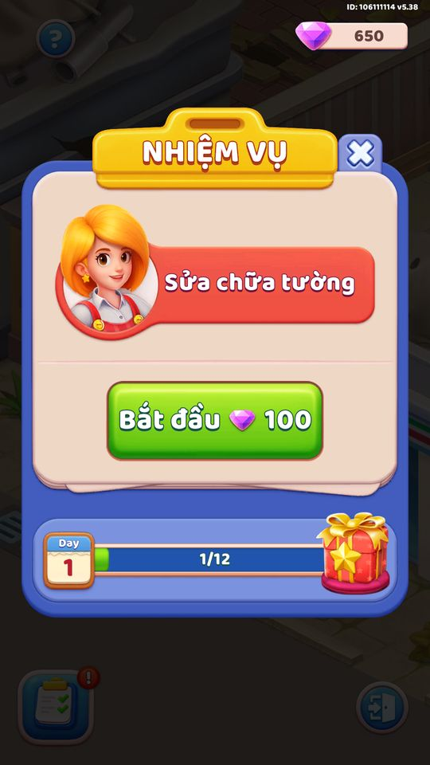

Ảnh chụp màn hình
Kiếm gem từ màn chơi, xây task trang trí theo khu vực và ngày.
Mô tả
- Building là hệ meta trang trí dài hạn giữ chân người chơi giữa các màn chơi lõi.
- Người chơi kiếm gem từ thắng màn, rồi tiêu gem để hoàn thành các task xây dựng theo từng khu vực và ngày.
- Nhiều task cho phép chọn chủ đề trang trí (theme); có nút Build All để xây hàng loạt.
- Khung này cũng là nền cho các sự kiện building theo mùa (Halloween/Christmas) qua BaseBuildingEventDataController.
Thiết kế chi tiết
Tóm tắt thiết kế
Playtest Nút “Khu vực 1” mở cảnh cửa hàng xuống cấp; bong bóng nhiệm vụ “Sửa chữa tường — Bắt đầu 100 kim cương”, thanh ngày (Day 1, 1/12) với quà cuối ngày.
Playtest Sau khi sửa có thoại cốt truyện (Sparky, Scarlet — cửa hàng của người bà) và cho chọn kiểu trang trí (3 phối màu).
Code Kim cương nhận theo độ khó màn (BuildingGemRewardByLevelSheet, 28/10 là 100/màn); chi phí task theo cỡ tiny/small/medium/large/giant; quà theo ngày.
Luồng người chơi từng bước
- Khu vựcNgười chơi PlaytestCảnh và nhiệm vụ.

Khu vực 1 
Sửa tường 100 kim cương, 1/12 - Cốt truyện và kiểuGiao diện PlaytestThoại, nhật ký thoại, chọn phối màu.


Vận dụng cho game khác
- Meta trang trí có cốt truyện + chọn kiểu (công thức Homescapes) cho mỗi màn thắng một ý nghĩa dài hạn ngoài sự kiện.
Bảng tổng hợp mọi tính năng đã làm chi tiết: GoodsSort_ThietKeChiTiet.xlsx.
Còn thiếu / chưa xác minh
Mở khóa & điểm vào
Mở ở màn 15 (BuildingDataController.get_levelUnlock/IsUnlock đọc RemoteConfig; remoteconfig_defaults levelUnlockBuilding=15). Có xử lý người dùng cũ/mới (CheckAndMarkOldNewUser) với refund gem khác nhau (GetGemRefundOldUser/NewUser, dayUseOldReward).
Điểm vào:
- Icon/tab Building trên Home
- Popup giới thiệu lần đầu (IsShowIntro -> ConfirmShowIntro)
- Popup gem đầy (IsShowPopupGemFull)
- Deeplink khi chưa mở khóa (IsShowDeepLinkWhenNotUnlock)
Cách hoạt động
- Thắng màn -> GetGemFromLevel (BuildingGemRewardByLevelSheet theo độ khó) -> AddGem.
- Đủ gem -> CompleteTask trừ gem (chi phí theo BuildingTaskTypeSheet + BuildingResouceRequireSheet tiny..giant).
- SelectTheme chọn chủ đề; NextTask/IsLastTaskInDay chuyển ngày/area.
- ClaimReward nhận thưởng ngày (BuildingRewardByDaySheet user mới / ForOldUse user cũ).
- BaseBuildingController.BuildTask dựng mô hình 3D và chạy animation xây.
Luồng chi tiết theo code
Init dựng BuildingData (gem, area, day, task, themes...) và đồng bộ số ngày/task theo SOAreaContainer. Mỗi màn chính thắng -> GetGemFromLevel tính gem theo độ khó màn (BuildingGemRewardByLevelSheet, có nhánh riêng cho Super League) rồi AddGem; có thể nhận ngay trong game (ClaimGemIngame) hoặc cuối màn (IsClaimGemEndGame). Khi đủ gem cho task hiện tại (IsEnoughGemForTask, GetGemRequiredForTask dựa trên loại task BuildingTaskTypeSheet và kích cỡ BuildingResouceRequireSheet: tiny/small/medium/large/giant theo day), người chơi CompleteTask để xây; nếu task cho chọn theme thì SelectTheme. NextTask chuyển sang task kế, hết task trong ngày thì sang ngày/area mới (IsLastTaskInDay). Có nút 'Build All' tiêu toàn bộ gem đủ điều kiện (BuildAll). Thưởng theo ngày (ClaimReward -> BuildingRewardByDaySheet cho user mới, BuildingRewardByDayForOldUseSheet cho user cũ). BaseBuildingController.BuildTask dựng/animation mô hình. Mọi thay đổi Save (mã hóa) + UpdateDataToServer; server có thể ghi đè qua UpdateDataFromServer.
Ảnh chụp màn hình (1)
1 ảnh chụp trong game (BlueStacks/LDPlayer, tài khoản cấp 4). Bấm ảnh để phóng to; nhãn UC dẫn tới use case tương ứng.

Phần thưởng
Phần thưởng theo code
| Ngữ cảnh | Phần thưởng | Evidence |
|---|---|---|
| Gem từ màn chơi | BuildingGemRewardByLevelSheet.gem theo độ khó | BuildingDataController.GetGemFromLevel |
| Thưởng theo ngày | gold/hammer/swap/replace/freeze (BuildingRewardByDaySheet) | BuildingDataController.ClaimReward |
Số liệu chính
| Chỉ số | Giá trị | Nguồn |
|---|---|---|
| ||
|
Use case (7)
Bấm vào từng use case để mở. Mở/đóng tất cả
UC-01 Nhận gem khi thắng màn
Các bước- GetGemFromLevel đọc BuildingGemRewardByLevelSheet theo LevelDataController.GetLevelDifficult
- Nhánh Super League dùng GetGemFromLevelSuperleague
- AddGem cộng vào BuildingData.gem (ObscuredInt)
- ClaimGemIngame (trong màn) hoặc chờ cuối màn (IsClaimGemEndGame); Save + DelayUpdateToServer
| Actor | System |
|---|---|
| Trigger | Thắng màn chính |
| Điều kiện | Building đã mở (IsUnlock) |
| Kết quả | Gem tăng để dùng cho các task xây dựng |
| Quy tắc / số liệu | Gem mỗi màn theo độ khó, EncryptedInt trong BuildingGemRewardByLevelSheet (do server) |
| Evidence | BuildingDataController.GetGemFromLevel; BuildingDataController.AddGem; BuildingGemRewardByLevelSheet.Get |
UC-02 Hoàn thành một task xây dựng
Các bước- GetGemRequiredForTask tính chi phí theo loại task (BuildingTaskTypeSheet) và kích cỡ ngày (BuildingResouceRequireSheet)
- CompleteTask trừ gem, đánh dấu task xong
- BaseBuildingController.BuildTask chạy animation dựng mô hình
- NextTask chuyển task kế; Save + DelayUpdateToServer
| Actor | Player |
|---|---|
| Trigger | Bấm xây một task trong khu vực hiện tại |
| Điều kiện | IsEnoughGemForTask true |
| Kết quả | Task được xây, khu vực trang trí tiến triển |
| Quy tắc / số liệu | Chi phí gem = tiny/small/medium/large/giant theo day (BuildingResouceRequireSheet) ứng loại task (do server) |
| Evidence | BuildingDataController.CompleteTask; BuildingDataController.GetGemRequiredForTask; BuildingTaskTypeSheet.Get; BuildingResouceRequireSheet.Get |
UC-03 Chọn chủ đề trang trí cho task
Các bước- GetTheme(area,day,task) đọc theme hiện tại
- SelectTheme(area,day,task,theme) lưu lựa chọn vào BuildingData.themes
- BuildingData.Update + Save
- DelayUpdateToServer
| Actor | Player |
|---|---|
| Trigger | Task cho phép chọn theme |
| Điều kiện | Task đang ở bước chọn theme (IsLastTaskInDay/SelectTheme khả dụng) |
| Kết quả | Khu vực hiển thị theo chủ đề người chơi chọn |
| Quy tắc / số liệu | Danh sách theme theo task; lưu trong themes (List<int>) |
| Evidence | BuildingDataController.SelectTheme; BuildingDataController.GetTheme; BuildingData (themes) |
UC-04 Nhận thưởng theo ngày
Các bước- GetRewardResourceValues chọn BuildingRewardByDaySheet (user mới) hoặc BuildingRewardByDayForOldUseSheet (user cũ)
- ClaimReward phát thưởng (gold/hammer/swap/replace/freeze...)
- log 'reward_day_{0}'; Save + DelayUpdateToServer
| Actor | Player |
|---|---|
| Trigger | Hoàn thành hết task của một ngày |
| Điều kiện | Đã xong các task trong day (GetRewardResourceValues có thưởng) |
| Kết quả | Nhận thưởng tài nguyên/booster của ngày |
| Quy tắc / số liệu | Thưởng theo day từ BuildingRewardByDaySheet (gold/hammer/swap/replace/freeze EncryptedInt, do server); phân biệt user cũ/mới |
| Evidence | BuildingDataController.ClaimReward; BuildingDataController.GetRewardResourceValues; BuildingRewardByDaySheet.Get |
UC-05 Build All - xây hàng loạt
Các bước- IsEnoughGemsToBuildAllArea kiểm tra tổng gem
- BuildAll lặp CompleteTask tới khi hết gem/hết task
- Cập nhật area/day/task; Save + DelayUpdateToServer
| Actor | Player |
|---|---|
| Trigger | Bấm nút Build All |
| Điều kiện | IsShowBuildAllButton true (đủ gem cho nhiều task) |
| Kết quả | Nhiều task được xây liên tiếp trong một lần |
| Quy tắc / số liệu | Giới hạn bởi GetGemsRequireForBuildAllAreaFromCurrentTask |
| Evidence | BuildingDataController.BuildAll; BuildingDataController.IsShowBuildAllButton; BuildingDataController.GetGemRequiredForBuildAll |
UC-06 Hoàn gem cho người dùng cũ/mới
Các bước- IsRefundGemOldUser/IsRefundGemNewUser kiểm tra điều kiện
- GetGemRefundOldUser/GetGemRefundNewUser (RemoteConfig) tính lượng hoàn
- RefundGemForOldUser/RefundGemForNewUser cộng gem bù
- Save + DelayUpdateToServer
| Actor | System |
|---|---|
| Trigger | Lần đầu mở Building sau cập nhật đổi kinh tế |
| Điều kiện | CheckAndMarkOldNewUser xác định loại user |
| Kết quả | Người chơi được hoàn gem phù hợp khi hệ kinh tế thay đổi |
| Quy tắc / số liệu | dayUseOldReward phân nhánh user cũ/mới; lượng hoàn do RemoteConfig/server |
| Evidence | BuildingDataController.CheckAndMarkOldNewUser; BuildingDataController.RefundGemForNewUser; BuildingDataController.GetGemRefundNewUser |
UC-07 Lưu chủ đề cho sự kiện building theo mùa
Các bước- BuildingEventThemeDataController.SetTheme(index,theme) lưu vào BuildingEventThemeData.themes
- ValidateData kiểm tra hợp lệ (key 'building_event_theme_1')
- Save + DelayUpdateToServer; server đồng bộ qua UpdateDataFromServer
| Actor | System |
|---|---|
| Trigger | Chọn theme trong Halloween/Christmas Festival |
| Điều kiện | Sự kiện building theo mùa đang chạy |
| Kết quả | Chủ đề trang trí sự kiện mùa được ghi nhớ riêng |
| Quy tắc / số liệu | Lưu dưới khóa 'building_event_theme_1'; dùng chung cho building Halloween/Christmas |
| Evidence | BuildingEventThemeDataController.SetTheme; BuildingEventThemeDataController.ValidateData |
Cấu hình (11)
Gộp mọi nguồn: const trong code, JSON mặc định trong Resources, bảng static, storage key, AB test, cờ server.
| Nguồn | Key | Kiểu | Giá trị | Ý nghĩa | Nơi định nghĩa |
|---|---|---|---|---|---|
| server info | levelUnlockBuilding | int | 15 | Màn mở Building meta | RemoteConfig; BuildingDataController.get_levelUnlock |
| config class | BuildingData | class | gem(ObscuredInt),area,day,task,dayUseOldReward,gemFullFlag,themes(List<int>),showIntro,lastTimeBuild | Dữ liệu tiến trình Building | BuildingDataController |
| config class | BuildingResouceRequireSheet | sheet | day, tiny, small, medium, large, giant (EncryptedInt) | Chi phí gem theo kích cỡ task mỗi ngày (do server) | BuildingResouceRequireSheet |
| config class | BuildingTaskTypeSheet | sheet | task, type (EncryptedInt) | Loại/kích cỡ của từng task | BuildingTaskTypeSheet |
| config class | BuildingGemRewardByLevelSheet | sheet | id, gem (EncryptedInt) | Gem nhận theo độ khó màn (do server) | BuildingGemRewardByLevelSheet |
| config class | BuildingRewardByDaySheet | sheet | day, gold, hammer, swap, replace, freeze (EncryptedInt) | Thưởng theo ngày cho user mới (do server) | BuildingRewardByDaySheet |
| config class | BuildingRewardByDayForOldUseSheet | sheet | theo day -> reward | Thưởng theo ngày cho user cũ (do server) | BuildingRewardByDayForOldUseSheet |
| config class | BuildingDayTaskNumSheet | sheet | id, taskByDay[] (EncryptedInt) | Số task mỗi ngày trong area | BuildingDayTaskNumSheet |
| asset | SOAreaContainer | ScriptableObject | area/day/task, GetTask, GetDayInArea, GetNumTaskInArea | Cấu trúc khu vực, ngày, task và nội dung mô hình | SOAreaContainer |
| code const | BuildingEventThemeDataController.key | string | building_event_theme_1 | Khóa lưu theme sự kiện building theo mùa | BuildingEventThemeDataController (const) |
| storage key | building / task_ / area | string | khóa & analytics | Khóa lưu và tham số log | BuildingDataController |
Backend / server
| Command | Chiều | Mục đích |
|---|---|---|
UpdateDataFromServer(BuildingDataServer) | server→client | Server ghi đè tiến trình Building |
UpdateDataToServer / DelayUpdateToServer | client→server | Đồng bộ gem, task, theme |
get-config (ClientClassConverter) | server→client | Nạp các Building*Sheet (EncryptedInt) |
Giao diện (UI)
| Element | Class | Mục đích |
|---|---|---|
| Màn Building (mô hình 3D isometric) | BaseBuildingController | Dựng khu vực, chạy animation xây (BuildTask) |
| Popup intro / gem đầy | BuildingDataController (IsShowIntro / IsShowPopupGemFull) | Giới thiệu và nhắc gem đầy |
| Nhân vật giao task | BuildingDataController.GetCharacterShowTask (CharacterName) | Hiển thị nhân vật ra nhiệm vụ |
Analytics (4)
| Event | Tham số | Khi nào |
|---|---|---|
building_build_task | task, area | Hoàn thành task |
reward_day_{0} | day | Nhận thưởng ngày |
interval_2_task | - | Theo dõi nhịp xây giữa 2 task |
level / level_cpl / winstreak | - | Gem từ màn/super league |
Storage keys
building building_event_theme_1
Chưa đọc được / ghi chú
- Chi phí gem, gem theo màn và thưởng ngày đều là EncryptedInt từ get-config -> do server.
- Cấu trúc area/day/task nằm trong SOAreaContainer (asset Addressable), không trích số tổng quát trong pseudo-C.
- Mở ở màn 15 nên tài khoản test (level 2) chưa thấy; dùng sprite APK để minh họa.
Tính năng liên quan
Hội Chợ Giáng Sinh Lễ hội Halloween (Building) Đào báu (Dig & Pharaoh) Collection
Nguồn đã đọc
- features/BuildingDataController.md
- features/BaseBuildingController.md
- features/BuildingEventThemeDataController.md
- features/BaseBuildingEventDataController.md
- features/BuildingResouceRequireSheet.md
- features/BuildingTaskTypeSheet.md
- features/BuildingGemRewardByLevelSheet.md
- features/BuildingRewardByDaySheet.md
- facts/config/remoteconfig_defaults.tsv
- facts/naming.json